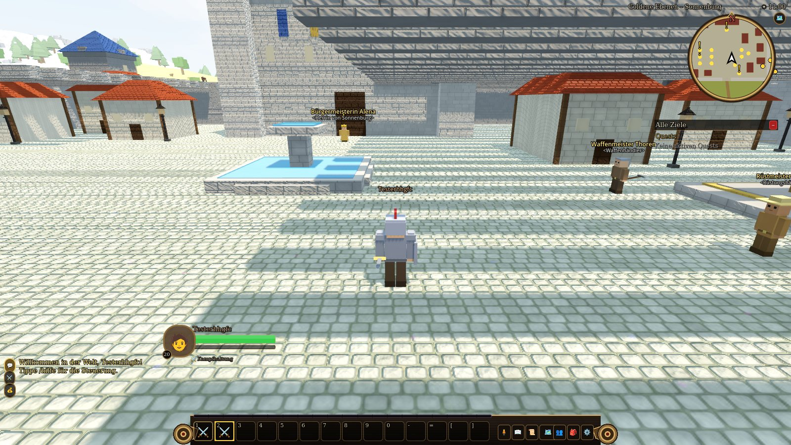
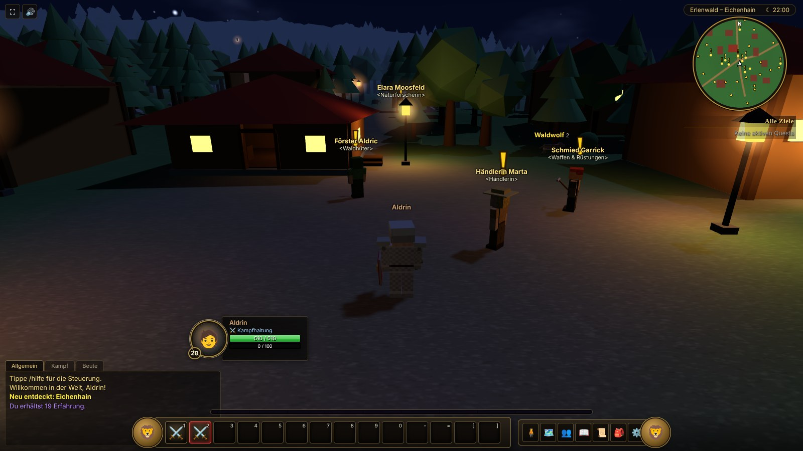

Erlenwald Online
Ein Low-Poly-MMORPG im Blockstil: zwei Kontinente, drei Klassen, Dungeons, eine Fähre über das Sturmmeer und Städte, in denen bei Einbruch der Nacht die Laternen angehen. Im Browser oder als nativer Desktop-Client.
Eine Welt zum Entdecken
Erlenwald Online ist ein Mehrspieler-Rollenspiel mit klassischer MMO-Spielweise: Quests, Kampf mit Fertigkeiten, Beute, Gruppen und Dungeons. Der Server ist maßgeblich für alles Wichtige, die Clients zeigen die Welt.
Zwei Kontinente
Erlenmark (Stufe 1–20) mit Wald, Ebenen, Moor, Eisgipfeln und Wüste, und das Jadereich (Stufe 20–40) mit Dschungel, Kirschblütenhain, Canyon und Aschelanden. Je 600 × 600 m.
Krieger, Jäger, Magier
Alle zwei Stufen eine neue Fertigkeit. Klassenquests schalten Tiere zähmen, Verteidigungshaltung und den Wasserelementar frei.
Dungeons für 5 Spieler
Schwarzfelsmine, Versunkener Nebeltempel und Feuerschlund mit Minibossen, Trash und Endboss. Beute gibt es persönlich für jeden.
Fähre und Schwimmen
Ein Schiff pendelt im festen Takt zwischen den Häfen. Im Küstenwasser kann man schwimmen, das offene Meer bleibt der Fähre vorbehalten.
Tag, Nacht und Licht
Ein Spieltag dauert 6 Stunden. Bei Nacht gehen Laternen und Hausfenster an und werfen im nativen Client echte Schatten.
Greifenflüge
Greifenmeister schalten Flugpunkte frei. Von dort geht es schnell zu allen bekannten Städten.
Gruppen und Chat
Spieler einladen, in der Gruppe kämpfen und per Chat sprechen. Alle sehen dieselbe Tageszeit und dieselbe Welt.
Überall spielbar
Der Web-Client läuft in jedem modernen Browser, mit Touch-Steuerung auch auf dem Handy. Der native Client bringt bessere Grafik und mehr Einstellungen.

Nativer Client
Für Windows und Linux, gebaut mit Godot. Echtzeitschatten, realistisches Wasser, detailreicher Boden, Himmel mit Sonne, Mond und Sternen, viele Grafik- und Steuerungseinstellungen und Gamepad-Unterstützung. Ein Launcher hält das Spiel automatisch aktuell.

Web-Client
Ohne Installation: Seite öffnen, Account anlegen, losspielen. Läuft mit Three.js direkt im Browser, auch auf Tablets und Smartphones mit virtuellem Joystick.
Download
Wähle deinen Client. Der Launcher lädt das Spiel, hält es aktuell und repariert beschädigte Dateien.
Windows
Der Installer lädt Launcher und Spiel (ca. 24 MB, danach holt der Launcher das Spiel). Installation ohne Administratorrechte, Startmenü und Desktop-Verknüpfung.
Installer herunterladenErlenwaldOnline-Setup.exe Komplettpaket (offline)ErlenwaldOnline-Setup-Full.exeLinux
Archiv entpacken und ./install.sh ausführen. Das legt einen Menüeintrag und den Befehl erlenwald an. Der Launcher lädt das Spiel beim ersten Start.
Web-Client
Ohne Installation im Browser, auch auf Tablet und Smartphone mit Touch-Steuerung. Der Web-Client wird vom Server ausgeliefert.
So spielst du im BrowserWindows, Linux, macOS, MobilAktuelle Version · Der Launcher aktualisiert das Spiel danach selbst und lädt nur geänderte Dateien. Die Programme sind nicht signiert: Windows SmartScreen zeigt beim ersten Start „Weitere Informationen → Trotzdem ausführen“.
Selbst hosten
Der Server ist ein einzelnes Go-Programm, das auch den Web-Client ausliefert. Mit Docker brauchst du zwei Zeilen:
git clone https://github.com/HerrPony/MMORPG-Prototype.git
cd MMORPG-Prototype && docker compose up --buildDanach ist das Spiel unter http://localhost:8080 erreichbar. Ohne Docker: cd Server && go run ./cmd/server. Fertige Images gibt es auf ghcr.io/herrpony/mmorpg-server und ghcr.io/herrpony/mmorpg-client. Alles Weitere steht in der README.